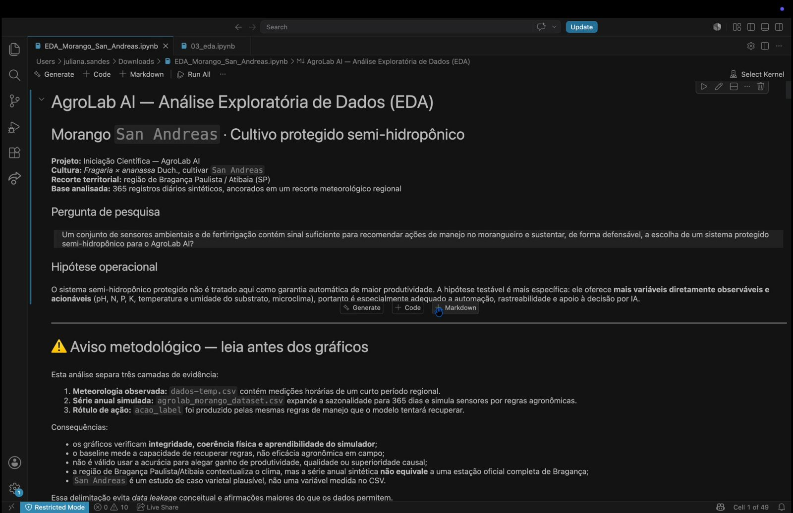
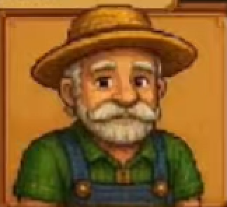

Estrutura
Chapas de MDF, perfis de sustentação, fixadores, acabamento e um monitor para o dashboard.
Projeto de Iniciação Científica 2026
Uma estufa inteligente e gamificada que mostra, na prática, como a tecnologia pode apoiar a agricultura familiar.
Simulação ilustrativa · a faixa clara marca o ideal da cultura
E se fosse possível não só entender os prejuízos causados por eventos climáticos extremos, mas também experimentar soluções na prática, sem colocar nenhuma safra em risco?
O desafio
O participante assume o papel do agricultor e precisa salvar uma plantação num ambiente instável, reagindo em tempo real à temperatura, à umidade e à luminosidade da estufa.
E ele não joga sozinho: do outro lado, um sistema autônomo guiado por modelos de inteligência artificial cuida de uma estufa idêntica, decidindo apenas com base nos dados dos sensores. No fim da rodada, as duas plantações estão lado a lado.
Decide pela intuição, olhando os painéis da estufa.
Compara cada leitura com a faixa ideal da cultura e age.
A cada rodada o jogador vê onde acertou e onde o dado teria decidido melhor.
Como construímos
Cada frente resolve uma parte do problema. Juntas, elas fecham um ciclo completo: o mundo físico gera dados, a IA transforma dados em decisão e o game transforma decisão em aprendizado.
A estufa física: estrutura, eletrônica, sensores, projeção e o painel que o público toca.
Ver a estufa 02As variáveis, os dados e os modelos que recomendam a ação de manejo certa para cada momento.
Ver os modelos 03A experiência: regras, tempo, imprevistos climáticos e feedback claro para o jogador.
Ver o jogoTemperatura, umidade, luz, pH, CE, fluxo e nível da água.
O microcontrolador leva as leituras para o computador.
Compara leitura e faixa ideal e escolhe entre irrigar, travar, proteger ou esperar.
A projeção exibe as duas estufas, a do jogador e a autônoma, ao mesmo tempo.
Pelos botões do painel, e os atuadores respondem na estufa real.
Uma estrutura acessível, montada para ser transportada e para tornar a experiência imersiva, mostrando de forma concreta a importância da tecnologia no campo.
Material acessível e fácil de cortar: sustenta o conjunto e permite montar e transportar a estufa.
Um projetor posicionado na frente da estufa exibe ao fundo os dois cenários do jogo simultaneamente.
Canos com vasos hidropônicos prontos para a solução nutritiva, acompanhados de sensores para registrar e estudar os dados.
Chapas de MDF, perfis de sustentação, fixadores, acabamento e um monitor para o dashboard.
Projetor, suporte frontal e superfície de fundo para formar a imagem.
Microcontrolador central: lê os sensores e se comunica com o computador.
Temperatura e umidade do ar, luminosidade, temperatura da solução, CE, fluxo e nível da água.
Circulação da solução, ventilação e iluminação da estufa.
Botões, display e o painel em que o jogador toma as decisões.
Antes de qualquer modelo, pesquisa. Levantamos na literatura científica, em fontes como Embrapa e Instituto Agronômico, as faixas ideais de cada variável para três culturas.

Enfrentamos o problema de cold start: não encontramos bases públicas adequadas ao nosso escopo, e algumas exigiam licença ou tinham uso limitado.
Por isso geramos dados sintéticos coerentes com a literatura e treinamos os primeiros modelos de classificação para as quatro ações do jogo.
O próximo passo é unir as frentes: capturar dados reais pelos sensores da estufa e validar o modelo de forma definitiva.
Um protótipo jogável em Unity que deixa a experiência imersiva e o mais próxima possível de uma estufa real.
Primeira versão beta em funcionamento, com interface inicial completa e navegável.
O jogador cuida das culturas com base nos painéis de monitoramento e acompanha saúde e crescimento em tempo real.

Nosso assistente-fazendeiro orienta o jogador sobre as melhores ações a cada rodada.
Cada rodada tem duração fixa para concluir o desafio.
Chuva intensa, queda brusca de temperatura, excesso de sol.
O jogador reage ajustando as variáveis da estufa.
Quanto melhor a decisão, melhor o desenvolvimento da cultura.
Impacto
Separadas, cada frente seria só uma estufa, um modelo ou um jogo. Unidas, viram uma forma concreta de mostrar a qualquer pessoa o valor da tecnologia no campo.
MDF, ESP32 e sensores acessíveis mostram que monitorar uma plantação não exige estrutura cara nem equipamento industrial.
Errar no jogo não custa uma safra. Estudantes e produtores experimentam decisões e veem as consequências na hora.
Colocar intuição e IA lado a lado torna visível, rodada a rodada, quando o dado decide melhor e por quê.
Parâmetros validados na literatura agronômica e um artigo científico como resultado do projeto.
Roadmap
Agosto fechou as bases de cada frente, setembro concentrou a integração e outubro marca a entrega do sistema completo, com IA, hardware e game funcionando juntos.
| Frentes | Agosto | Setembro | Outubro | Adicionais |
|---|---|---|---|---|
| Hardware | Finalizar estrutura dos canos e compra dos materiaisTestar sensores e projetar o sistema | Integrar o sistema e concluir a montagem | Sistema completo | |
| Inteligência Artificial | Finalizar estudo dos modelos e das culturasGerar os dados de forma concisa e aplicar EDA | Construir o dashboard e integrar com a IAAprimorar o modelo | Integrar a IA com o gameSistema completo | Finalizar o artigo científico para publicação em revistas |
| Game | Finalizar a versão beta do game | Adicionar novas interfaces gráficasCriar animações dos personagens | Finalizar o segundo beta do gameIntegrar a IA com o game |
Equipe
Estudantes de Iniciação Científica que dividiram o projeto entre hardware, inteligência artificial e game para chegar a um único sistema.
Como podemos usar tecnologia para tornar a agricultura mais eficiente, acessível e sustentável?
Porque o futuro da agricultura também depende de quem aprende a cuidar dela hoje.